Convolutional neural networks as learned motif scanners
Machine learning from scratch fitted a logistic regression on features we chose (GC content, motif counts). A convolutional neural network (CNN) learns its own features directly from the DNA sequence. This lecture opens the box:
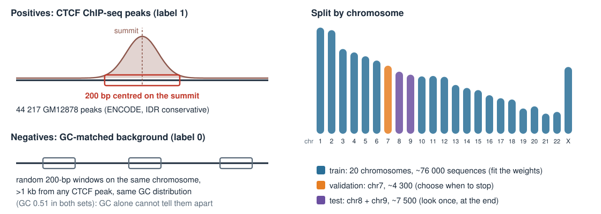
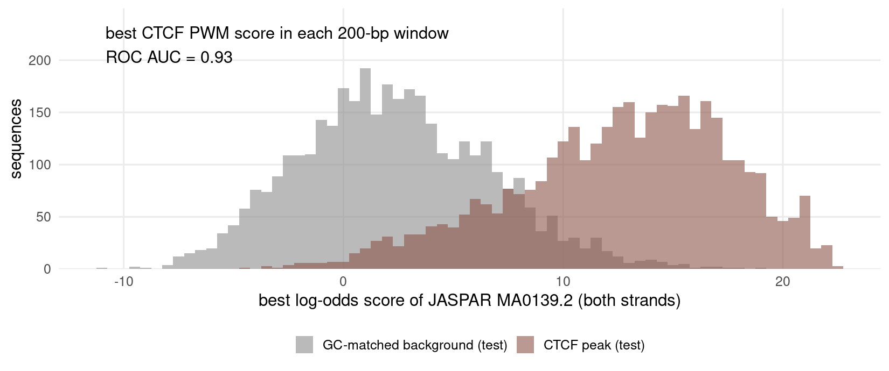
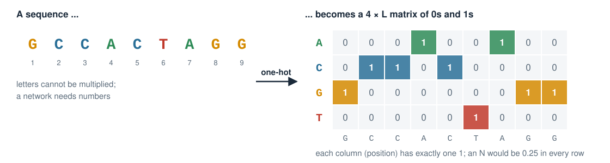
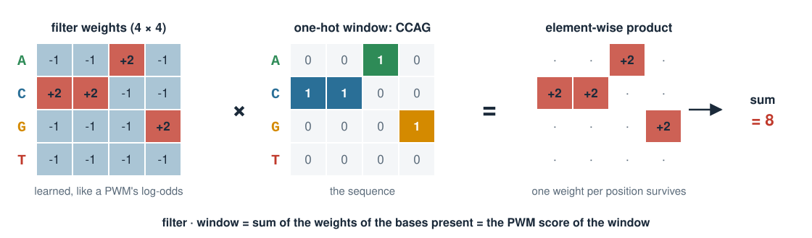
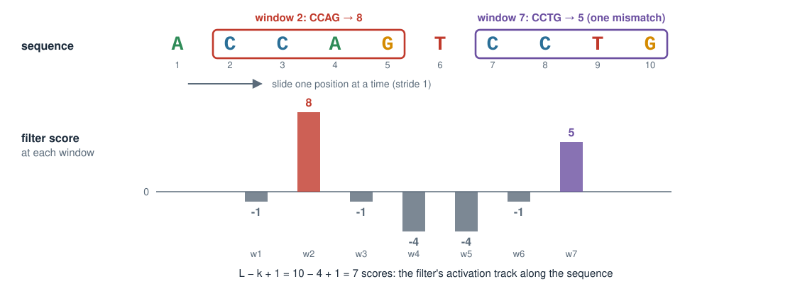
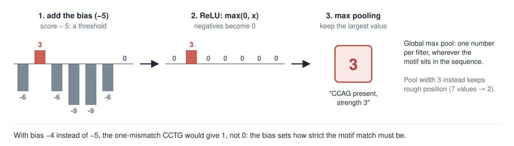
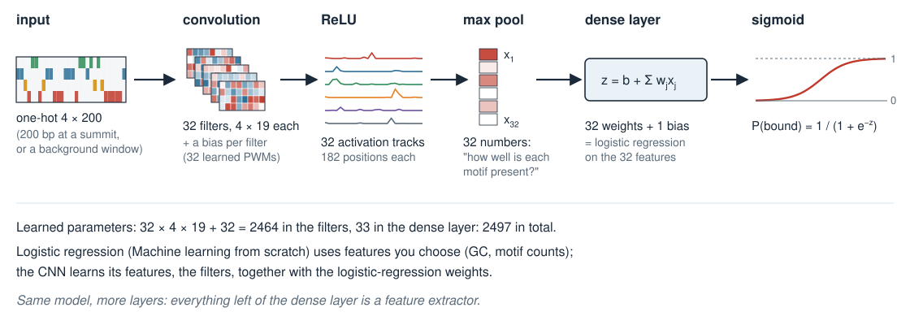
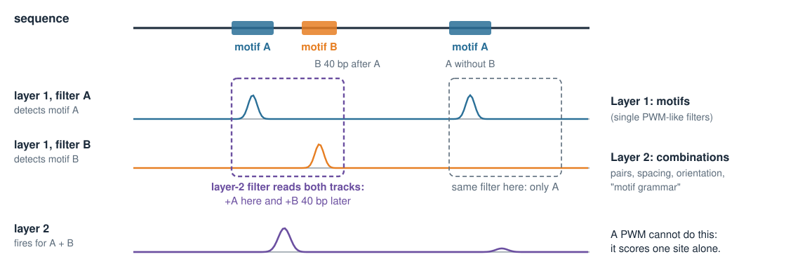
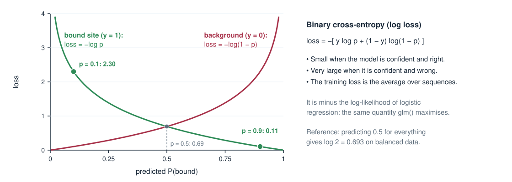
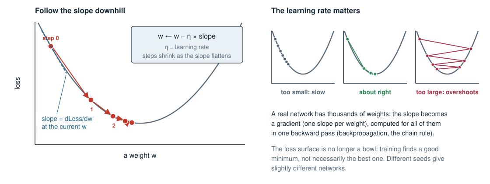
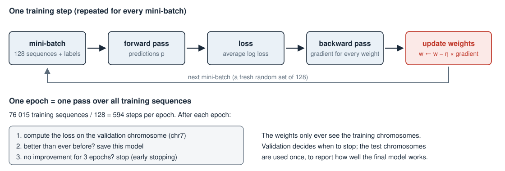
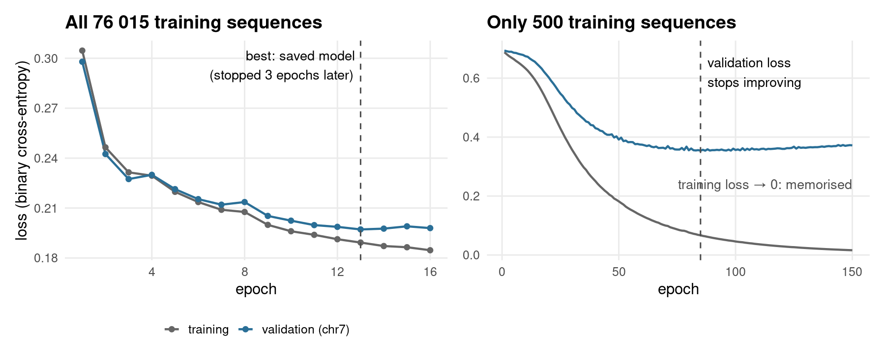
| choice | in our model | what it controls |
|---|---|---|
| number of filters | 32 | how many motifs the first layer can learn |
| filter width | 19 bp | longest motif one filter can see (CTCF core: ~15–20 bp) |
| pooling | global max | presence anywhere vs position |
| layers | 1 convolutional + 1 dense | motif combinations, receptive field |
| learning rate, batch size | 0.001, 128 | speed and stability of training |
| regularisation | early stopping | dropout, weight decay are common alternatives |
| input length | 200 bp | how much context the model sees |
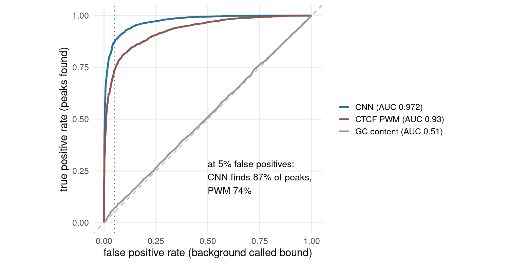
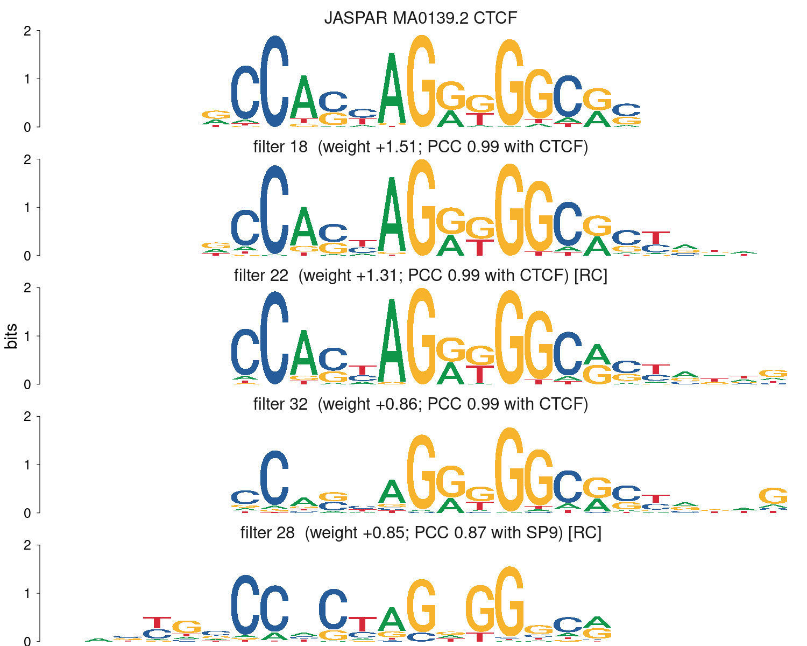
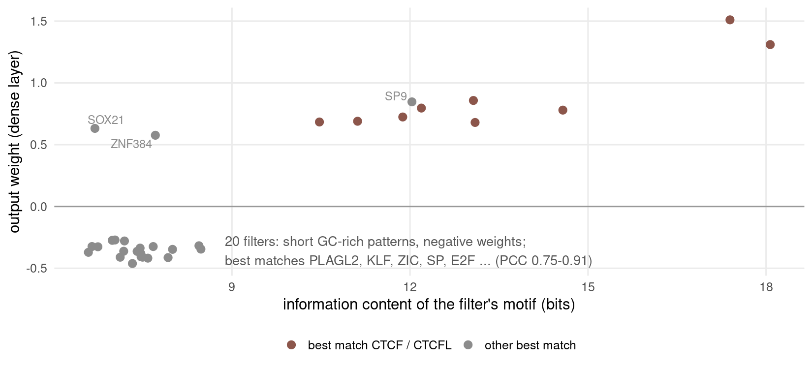
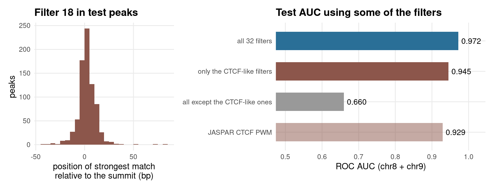
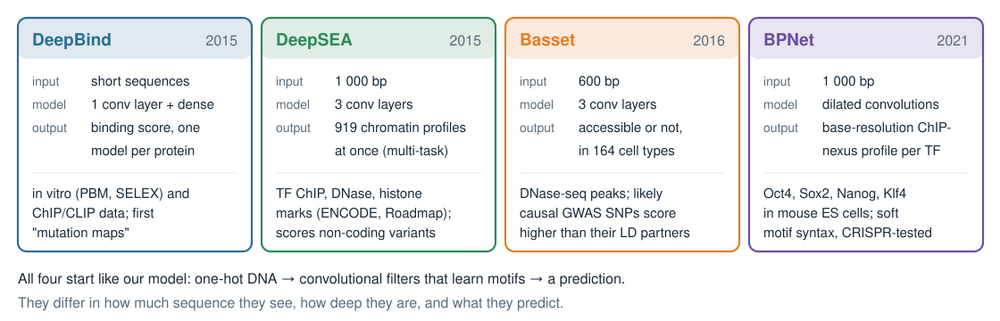
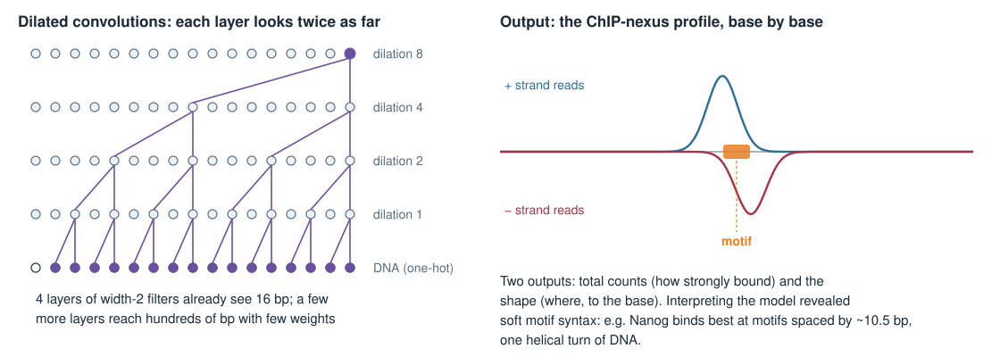
| idea | key fact |
|---|---|
| one-hot encoding | 4 × L matrix, one 1 per position |
| convolutional filter | 4 × k weights = a learned PWM; score of a window = sum of weights of its bases |
| bias + ReLU | learned threshold: max(0, score + b) |
| max pooling | “is the motif present?” (global) or rough position (local) |
| dense + sigmoid | logistic regression on the pooled filter outputs |
| deeper layers | motif combinations, spacing, longer receptive field |
| training | log loss; gradient descent with backpropagation; mini-batches, epochs |
| validation | choose epoch and hyperparameters; early stopping; test used once |
| our CTCF CNN | test AUC 0.972 vs PWM 0.929 vs GC 0.511 (chr8 + chr9) |
| filters | 9 of 32 learn the CTCF motif, both strands, at the summit |
Not required reading and not examined. For those who want the primary literature.